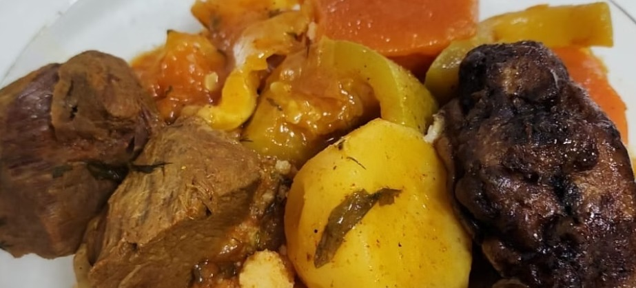
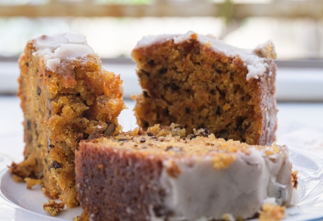
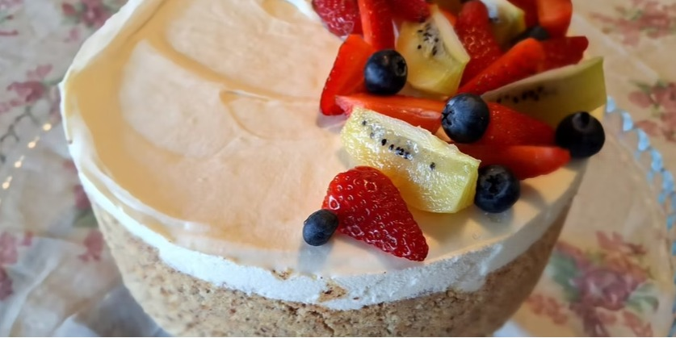
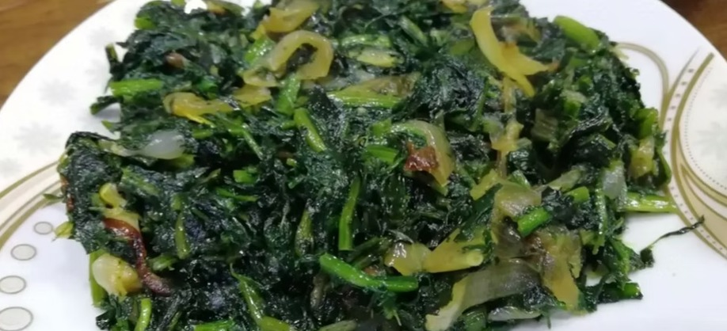
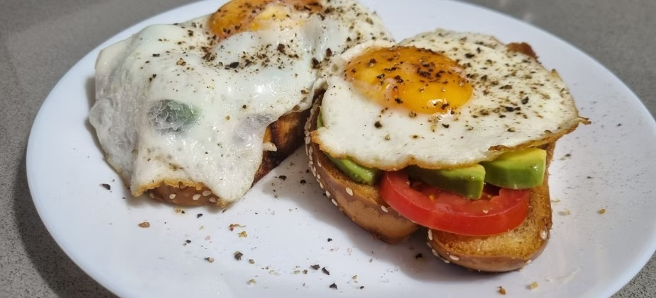
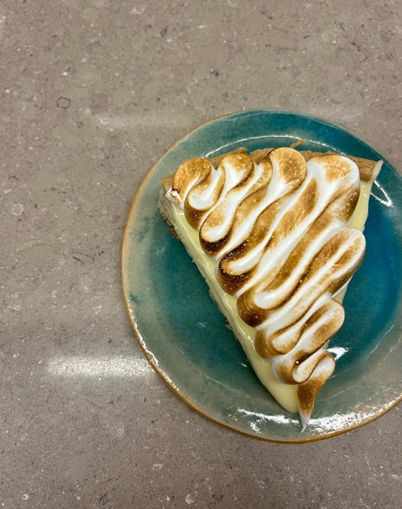
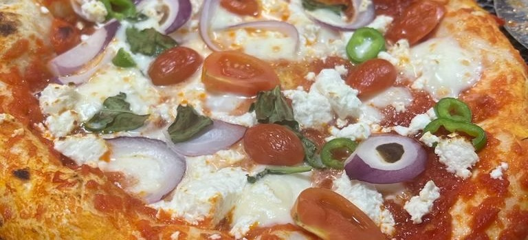

כל מתכון הוא גם סיפור. בכל מקום, בכל זמן.
בואו לבשל מנה – ולהגיש זיכרון לשולחן שלכם. כי הטעם שנשאר הוא הרבה יותר מאוכל – הוא דרך לזכור, לשתף ולהחיות את הסיפורים שחרוטים לנו בלב.
מתכונים חדשים
בשרי

קארין ג'ורנו ז״ל
קציצות מחשי וקוסקוס
קינוח

דקל סויסה ז״ל
עוגיות שוקולד צ'יפס
קינוח

מאיה פודר ז״ל
עוגת גזר
קינוח

אליהו מאיר אוחנה ז״ל
עוגת גבינה עם פירות
פרווה

אחסן דקסה ז״ל
עילת של אחסן
חלבי

רוני אשל ז״ל
כריך רוני
קינוח

אייל מבורך טויטו ז״ל
פאי לימון
חלבי

איתי גליסקו ז״ל
פיצה איטלקית
פרווה


אביעד אדרי ז״ל
שקשוקה של אביעד
אודות הטעם שנשאר
הטעם שנשאר הוא מיזם קהילתי המשלב מתכונים אישיים עם סיפורי הנצחה, המבקש לשמר את זכרם של חללי מערכות ישראל ונפגעי פעולות האיבה בדרך הכי אנושית שיש - דרך האוכל. לצד כל מתכון מסתתר אדם ולצד כל סיפור ישנו ניחוח של בית, של אהבה וגעגוע. אנו מאמינים שדרך החיבור בין אוכל לזיכרון, ניתן לגעת בלבבות, לספר חיים שלמים ולהפוך זיכרון לחוויה שנשארת.